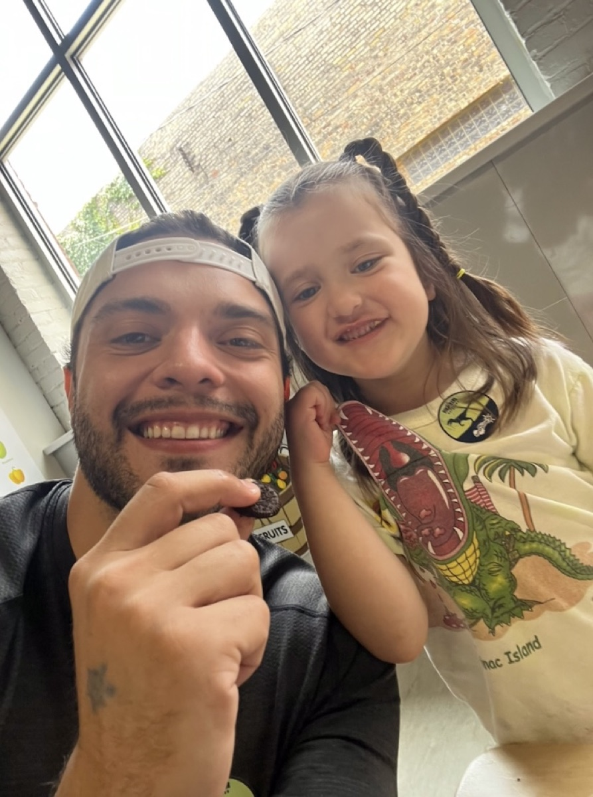
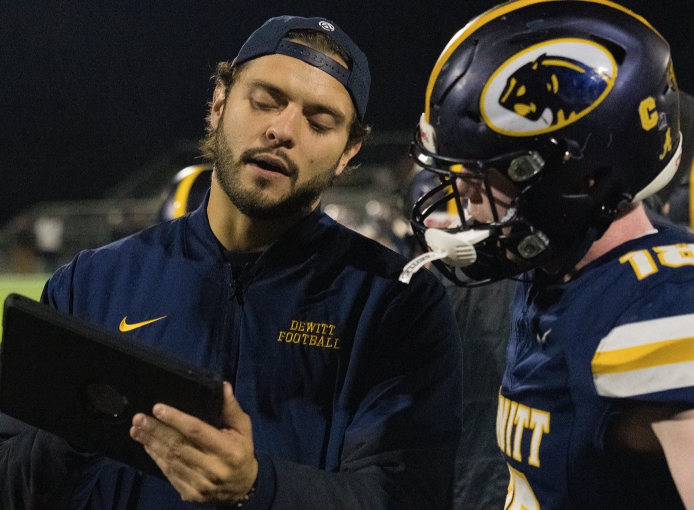
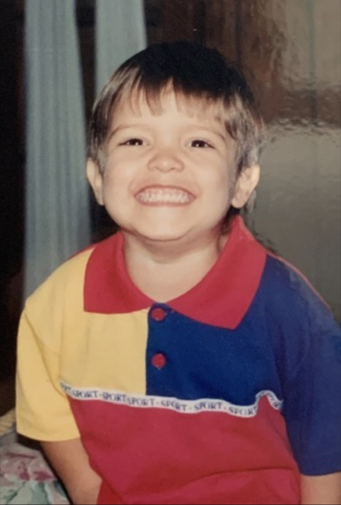
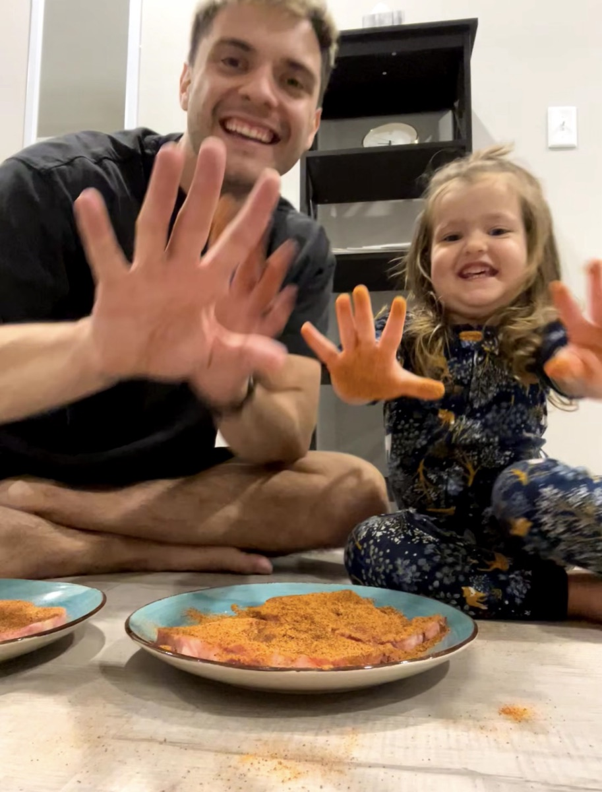
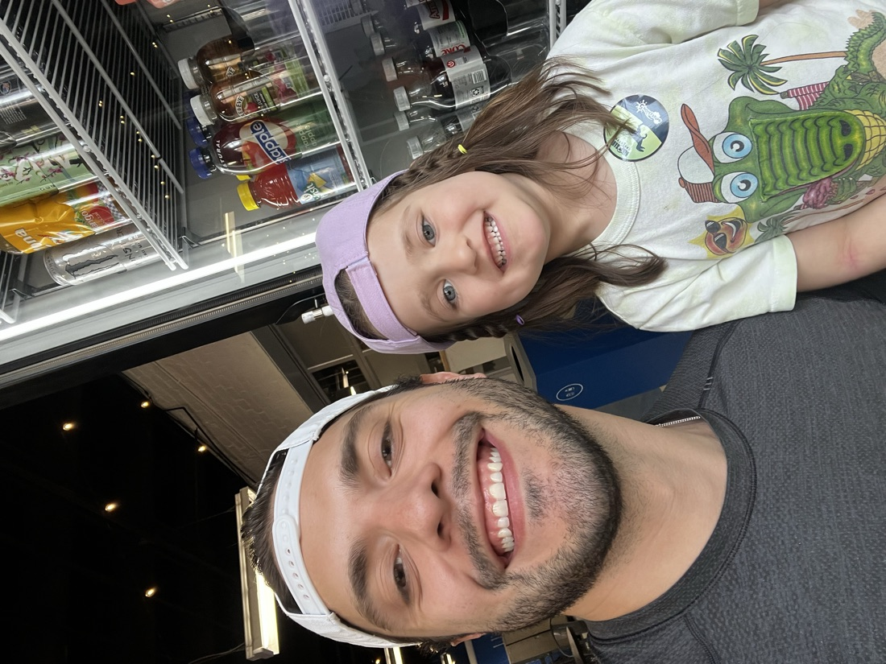
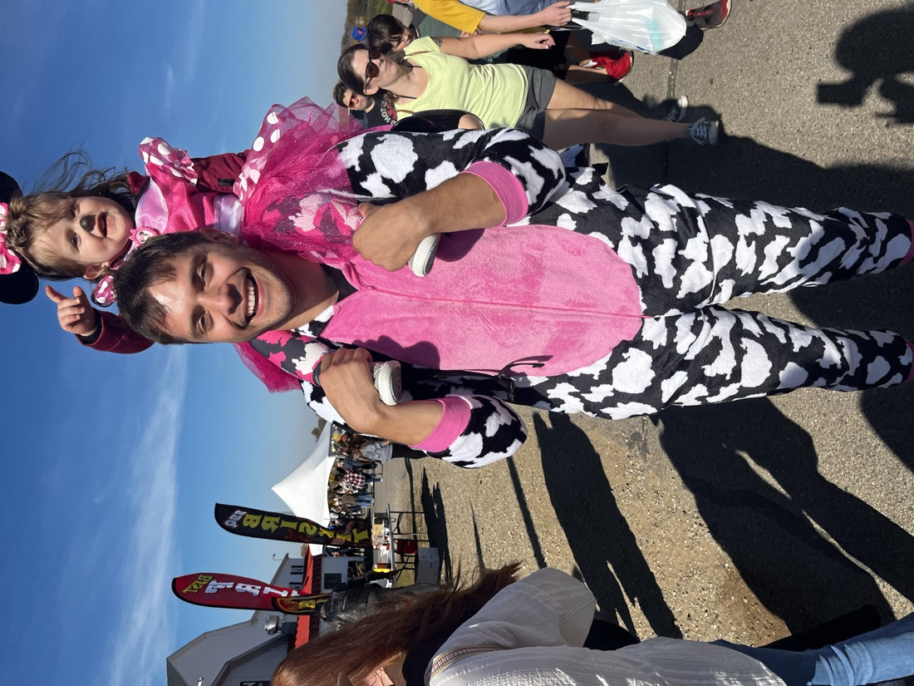
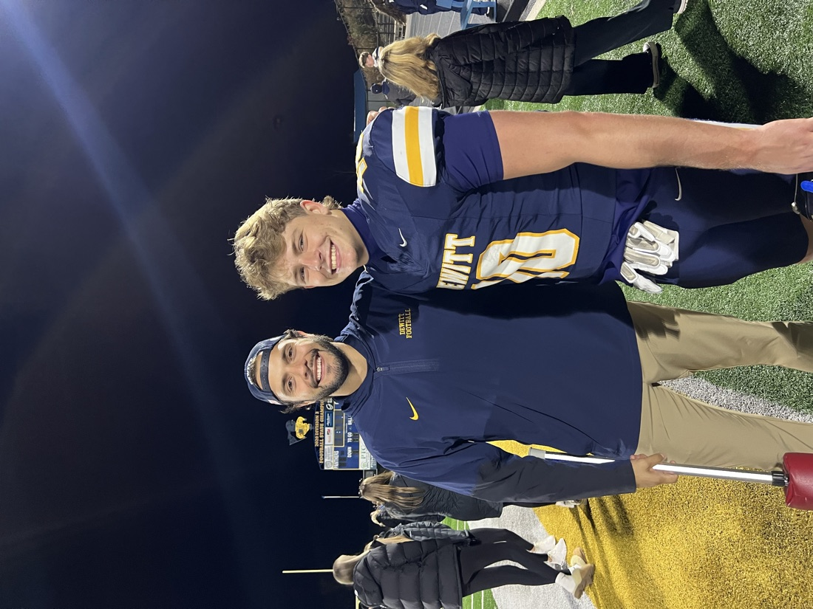
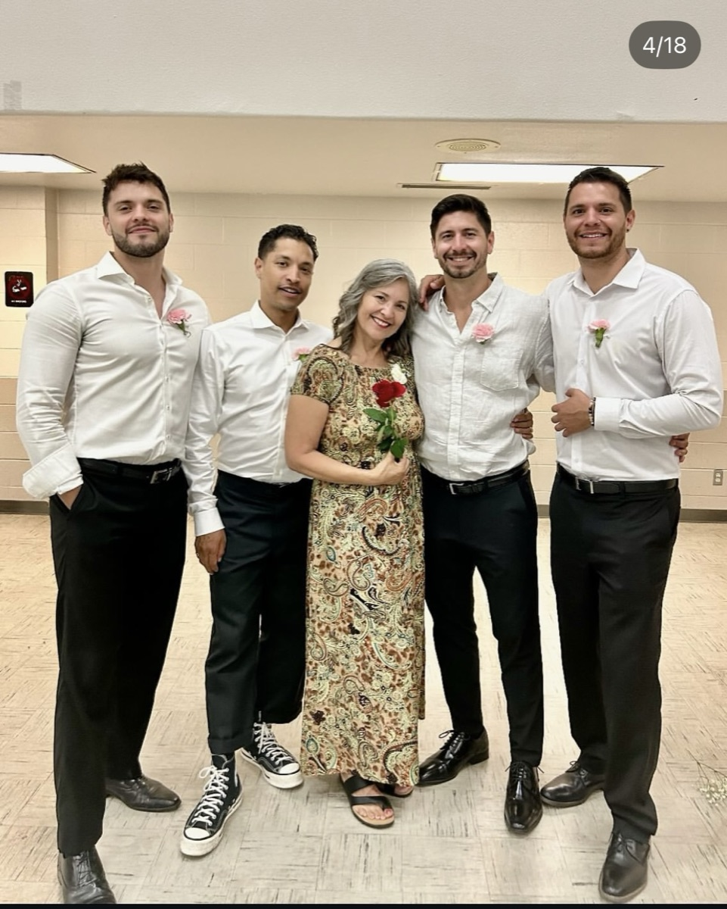
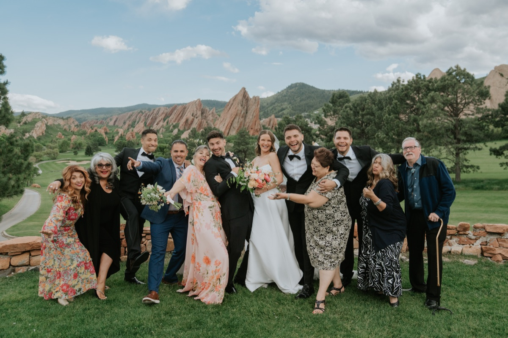

So I'll let the people who know me best tell you who I am.
Personality tests are a little silly. They're also, in my case, dead-on. Three of them, three different angles.
An enthusiastic, creative, sociable free spirit who can always find a reason to connect with someone.
full report ↗An ambitious achiever with a Two's warmth, driven to win people over and bring them along.
full report ↗A natural at meeting new people and winning them over, energized by making connections.
Quickly spots the patterns and issues others miss, then finds the most effective way forward.
Hard working, with deep stamina and real satisfaction in being busy and productive.
Anchored by core values that don't move, which give direction and a strong sense of purpose.
Fascinated by ideas, seeing connections others miss and the world from new perspectives.
"Zac is an incredibly creative and strategic brand marketer, with a (heaping) side of passion for the food industry. Not to mention that he's just a lot of fun to work with, a dream teammate."
"Zac is a marketing unicorn and a truly one-of-a-kind human who has the ability to connect with others and make them feel seen and understood."
"Zac is one of the best. No drama, just thoughtful work done well and an attitude that lifts up the whole team. I would work with him again in a heartbeat."
"Thoughtful, inquisitive, creative, and unfailingly kind, Zac is one of my favorite people. He does outstanding work because he pours his heart into it. He's one of a kind and a joy to be around, let alone work with."
"From the moment I met him I knew he'd be something special, and I was right. He was the definition of a true team player, always lifting people up around him. Zac is going to do big things in this world."
"Zac's upbeat and can-do attitude made him a perfect collaborator between the sales, CSM, and product teams. Strategic and creative. I enjoyed Zac's fresh perspectives."
All real, all on my LinkedIn. Read them in full there.
I asked my closest friends and family members for the words they'd use to describe me. Here were the most commonly repeated.








